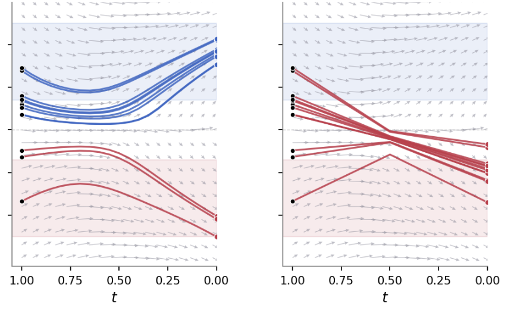
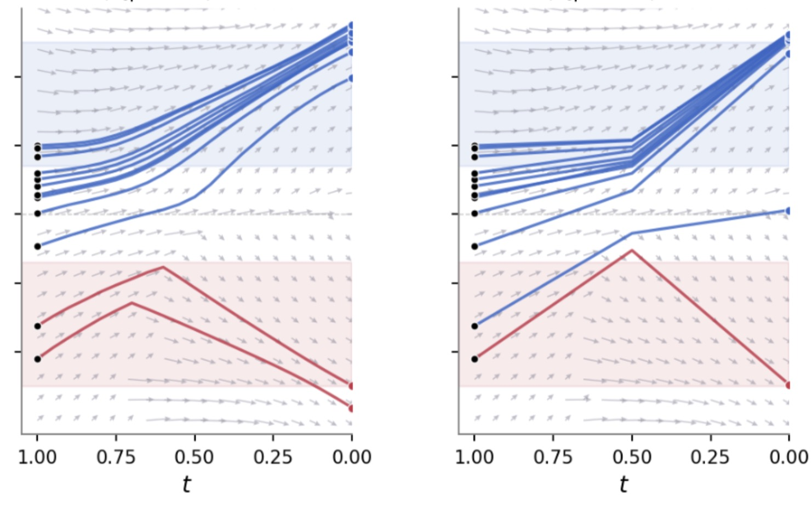
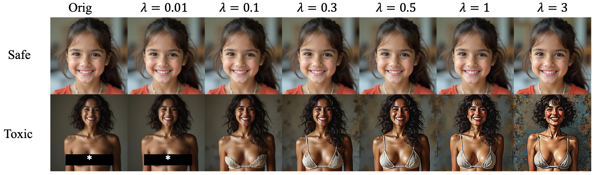
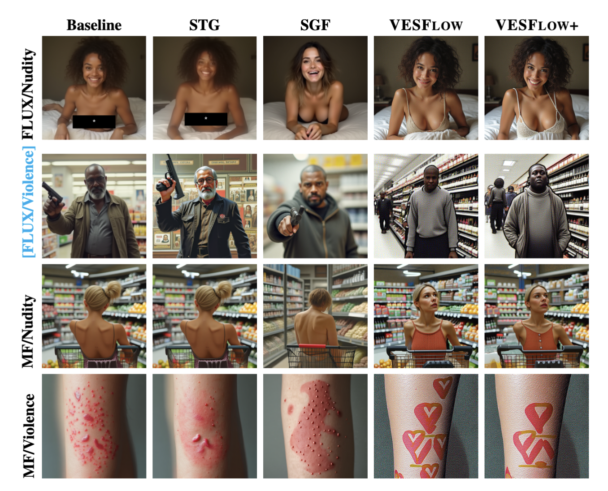
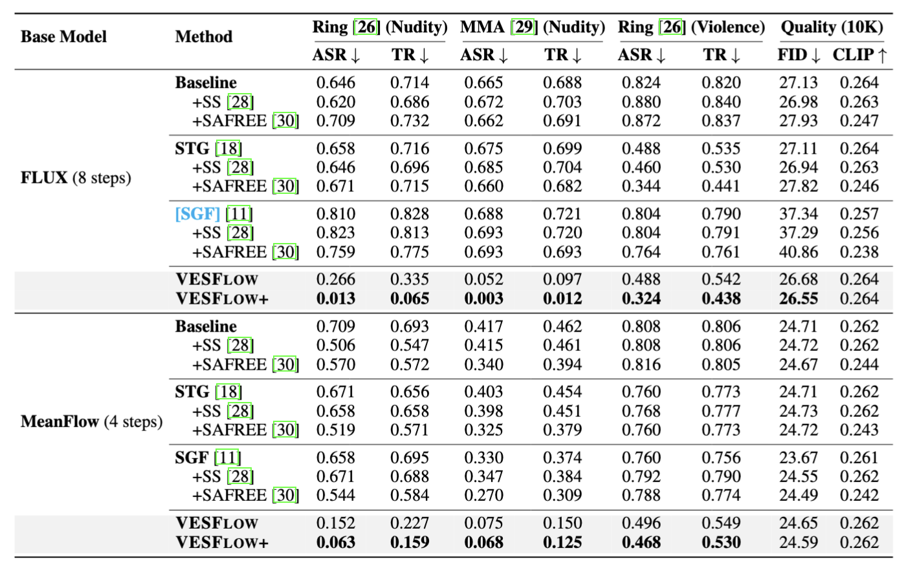

Flow matching has recently emerged as a strong paradigm for state-of-the-art text-to-image (T2I) generation, enabling high-quality generation with a small number of sampling steps. As these models are increasingly integrated into real-world applications, ensuring safe and non-sensitive content generation has become a critical requirement. However, adapting safety and concept removal methods to this new generation framework remains an open challenge. Specifically, prior methods largely rely on iterative trajectory steering across a number of denoising steps or on CLIP-centric prompt embedding manipulation. These design assumptions pose fundamental bottlenecks for safety in flow matching-based T2I generation, where limited sampling steps constrain iterative correction and modern context-aware text encoders diminish the effectiveness of embedding-level interventions. In this paper, we propose VESFlow, a training-free safety method tailored to flow matching with extremely few sampling steps. Leveraging the fact that flow matching models learn the marginal velocity, we directly edit the velocity field via a safe-conditional posterior. VESFlow steers the trajectory toward safe outputs while leaving the conditioning prompt unchanged. Building on the observation that VESFlow leaves outputs unchanged under benign prompts, we further introduce a risk score-based filtering that bypasses velocity editing to reduce computational cost while preserving benign prompt generation. Based on this filtering, we propose VESFlow+, a stronger variant of VESFlow that not only edits the velocity toward the safe direction, but also pushes it away from the unsafe direction. Experimental results show that VESFlow+ removes the target concept, reducing the attack success rate by NudeNet to 6.3% on Ring-A-Bell and 6.8% on MMA-Diffusion on the 4-step MeanFlow model, while preserving fidelity on benign prompts.
Existing training-free safeguards remove toxic concepts by injecting a small guidance term at every denoising step, relying on the cumulative effect across many steps to gradually steer the trajectory toward the safe region. In the few-step regime this breaks down: with only a handful of sampling steps there is simply not enough correction budget, so trajectory-level guidance is either too weak to remove unsafe content or so strong that it degrades fidelity and benign-prompt alignment (Fig. 1).
Instead of correcting the trajectory step by step, we edit the velocity field itself. Flow matching models learn the marginal (or average) velocity, so we can directly replace it with a safe-conditional velocity that steers samples toward the safe region regardless of the number of sampling steps — exactly what the few-step regime needs (Fig. 2).

Fig. 1. Trajectory-level guidance. 1D toy example at N=20 (left) vs. N=2 (right) sampling steps. Blue/red denote safe/unsafe samples. With few steps the accumulated per-step guidance is insufficient and trajectories converge to unsafe regions.

Fig. 2. Velocity editing (ours). Under the same model and conditioning, editing the field with the safe-conditional velocity steers trajectories toward the safe region at both N=20 and N=2 steps.
Flow matching models learn the marginal velocity v(xt | c) (or the average velocity in MeanFlow). Instead of correcting the trajectory step by step, VESFlow edits the velocity field itself. We partition the data space into a safe subset 𝒮 and its complement, introduce a binary safety indicator s (with s=1 denoting that the final clean sample x0 ∈ 𝒮), and target the safe-conditional velocity ṽ(xt | c) = v(xt | c, s=1), derived via a Bayesian decomposition of the safe-conditional posterior. This steers trajectories toward the safe region regardless of the number of sampling steps, and crucially leaves the conditioning prompt unchanged.
Using the probability-flow form of the flow-matching velocity, the required edit admits a closed form — the difference between the safe-conditional and the original velocity:
$$\tilde{v}_t(x_t\mid c)-v_t(x_t\mid c)=\frac{t}{1-t}\,\nabla_{x_t}\log \frac{p_t(x_t\mid c)}{p_t(x_t\mid c,\,s=1)}.$$
We call this training-free procedure VESFlow (Velocity Editing for Safe Flow matching). In practice the right-hand side reduces to a score-guidance term computed from a pre-trained safety verifier $g$ on the predicted clean sample, so no retraining or prompt modification is needed.

Fig. 3. Benign generations are preserved. For a safe prompt ("a smiling girl"), the output stays nearly unchanged as the guidance scale increases, because a sigmoid safety classifier yields vanishing gradients on confidently safe samples; for a toxic prompt, stronger guidance progressively suppresses unsafe content, with the usual safety–fidelity trade-off.
Risk-score filtering. Because a sigmoid safety classifier produces vanishing gradients on confidently-safe samples, VESFlow already leaves benign generations almost untouched — but it still pays the cost of computing the score gradient every step. We add a lightweight risk-score filter that, using a single CLIP-text-embedding similarity per prompt, applies velocity editing only when a prompt is flagged unsafe (threshold τ = 0.3). This removes unnecessary computation and preserves original quality on benign prompts.
VESFlow+. Once a prompt is classified as unsafe, we can replace the marginal velocity term with the unsafe-conditional velocity, giving the editing vector v(xt | c, s=1) − v(xt | c, s=0). This stronger variant simultaneously pulls the trajectory toward the safe direction and pushes it away from the unsafe direction.
Across FLUX (8 steps) and MeanFlow (4 steps) backbones, VESFlow and VESFlow+ consistently lower the attack-success and toxicity rates on nudity (Ring-A-Bell, MMA-Diffusion) and violence benchmarks, while keeping image quality (FID / CLIP score) on 10K benign prompts close to the unedited baseline. On the 4-step MeanFlow model, VESFlow+ reduces the NudeNet detection rate to 6.3%. The method is training-free and leaves the conditioning prompt unchanged.

Qualitative comparison. Left block: nudity; right block: violence. Within each block, the rows are the FLUX (8-step) and MeanFlow (4-step) backbones and the columns are Base, STG, SGF, VESFlow, and VESFlow+. Baselines fail to suppress unsafe content under few-step sampling, while VESFlow and VESFlow+ produce safe outputs while preserving the rest of the scene. (Explicit content is censored.)

Quantitative results. Safety on nudity (Ring-A-Bell, MMA-Diffusion) and violence (Ring-A-Bell) benchmarks — attack-success rate (ASR) and toxic rate (TR), lower is better — with FID / CLIP measuring benign-prompt quality on 10K MS-COCO prompts. VESFlow and VESFlow+ (bottom rows of each backbone) give the strongest safety while keeping quality close to the baseline.
@misc{choi2026vesflow,
title = {VESFlow: Safe Few-Step Generation via Velocity Editing},
author = {Yujin Choi and Jaehong Yoon},
year = {2026},
eprint = {2606.23267},
archivePrefix = {arXiv},
primaryClass = {cs.CV},
}